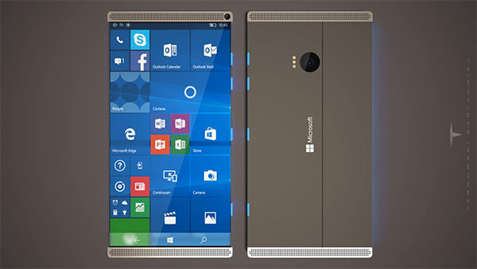

Bartlomiej Tarnowski ศิลปินจากประเทศโปแลนด์ได้จัดทำภาพคอนเซ็ปต์ใหม่ของ Microsoft Surface Phone ออกมาให้ได้ชมกัน โดยเผยให้เห็นการดีไซน์หน้าจอขนาดใหญ่ราว 6 นิ้ว แบบไร้ขอบ ที่ฝังเซ็นเซอร์สแกนลายนิ้วมือไว้ภายใน บนตัวเครื่องที่ผลิตจากวัสดุประเภทโลหะ พร้อมกล้องดิจิทัลด้านหน้าที่มุมบนขวา รวมถึงลำโพงคู่ที่อยู่ด้านบน และด้านล่าง ส่วนบริเวณด้านหลังของตัวเครื่องประกอบไปด้วยกล้องดิจิทัลตัวหลักพร้อมไฟแฟลช LED จำนวน 3 ดวง นอกจากนี้ยังเผยภาพคอนเซ็ปต์การใช้งาน Microsoft Surface Phone ร่วมกับคีย์บอร์ด และปากกาอัจฉริยะ (Surface Pen) เวอร์ชันอัปเกรดด้วยเช่นกัน
นายสืบวงศ์ แก้วสีดำ ปวส.2/1 เลขที่ 25